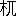

にごりえ
樋口一葉
おい
木村さん
信さん
寄つてお
出よ、お
寄りといつたら
寄つても
宜いではないか、
又素通りで二
葉やへ
行く
氣だらう、
押かけて
行つて
引ずつて
來るからさう
思ひな、ほんとにお
湯なら
歸りに
吃度よつてお
呉れよ、
嘘つ
吐きだから
何を
言ふか
知れやしないと
店先に
立つて
馴染らしき
突かけ
下駄の
男をとらへて
小言をいふやうな
物の
言ひぶり、
腹も
立たずか
言譯しながら
後刻に
後刻にと
行過るあとを、
一寸舌打しながら
見送つて
後にも
無いもんだ
來る
氣もない
癖に、
本當に
女房もちに
成つては
仕方がないねと
店に
向つて
閾をまたぎながら
一人言をいへば、
高ちやん
大分御述懷だね、
何もそんなに
案じるにも
及ぶまい
燒棒と
何とやら、
又よりの
戻る
事もあるよ、
心配しないで
呪でもして
待つが
宜いさと
慰さめるやうな
朋輩の
口振、
力ちやんと
違つて
私しには
技倆が
無いからね、
一人でも
逃しては
殘念さ、
私しのやうな
運の
惡るい
者には
呪も
何も
聞きはしない、
今夜も
又木戸番か、
何たら
事だ
面白くもないと
肝癪まぎれに
店前へ
腰をかけて
駒下駄のうしろでとん／＼と
土間を
蹴るは二十の
上を七つか十か
引眉毛に
作り
生際、
白粉べつたりとつけて
唇は
人喰ふ
犬の
如く、かくては
紅も
厭やらしき
物なり、お
力と
呼ばれたるは
中肉の
背恰好すらりつとして
洗ひ
髮の
大嶋田に
新わらのさわやかさ、
頸もと
計の
白粉も
榮えなく
見ゆる
天然の
色白をこれみよがしに
乳のあたりまで
胸くつろげて、
烟草すぱ／＼
長烟管に
立膝の
無作法さも
咎める
人［＃ルビの「ひい」はママ］のなきこそよけれ、
思ひ
切つたる
大形の
裕衣に
引かけ
帶は
黒繻子と
何やらのまがひ
物、
緋の
平ぐけが
背の
處に
見えて
言はずと
知れし
此あたりの
姉さま
風なり、お
高といへるは
洋銀の
簪で
天神がへしの
髷の
下を
掻きながら
思ひ
出したやうに
力ちやん
先刻の
手紙お
出しかといふ、はあと
氣のない
返事をして、どうで
來るのでは
無いけれど、あれもお
愛想さと
笑つて
居るに、
大底におしよ
卷紙二尋も
書いて二
枚切手の
大封じがお
愛想で
出來る
物かな、そして
彼の
人は
赤坂以來の
馴染ではないか、
少しやそつとの
紛雜があろうとも
縁切れになつて
溜る
物か、お
前の
出かた一つで
何うでもなるに、ちつとは
精を
出して
取止めるやうに
心がけたら
宜かろ、あんまり
冥利がよくあるまいと
言へば
御親切に
有がたう、
御異見は
承り
置まして
私はどうも
彼んな
奴は
虫が
好かないから、
無き
縁とあきらめて
下さいと
人事のやうにいへば、あきれたものだのと
笑つてお
前などは
其我まゝが
通るから
豪勢さ、
此身になつては
仕方がないと
團扇を
取つて
足元をあふぎながら、
昔しは
花よの
言ひなし
可笑しく、
表を
通る
男を
見かけて
寄つてお
出でと
夕ぐれの
店先にぎはひぬ。
店は二
間間口の二
階作り、
軒には
御神燈さげて
盛り
鹽景氣よく、
空壜か
何か
知らず、
銘酒あまた
棚の
上にならべて
帳塲めきたる
處もみゆ、
勝手元には七
輪を
煽く
音折々に
騷がしく、
女主が
手づから
寄せ
鍋茶椀むし
位はなるも
道理、
表にかゝげし
看板を
見れば
子細らしく
御料理とぞしたゝめける、さりとて
仕出し
頼みに
行たらば
何とかいふらん、
俄に
今日品切れもをかしかるべく、
女ならぬお
客樣は
手前店へお
出かけを
願ひまするとも
言ふにかたからん、
世は
御方便や
商買がらを
心得て
口取り
燒肴とあつらへに
來る
田舍ものもあらざりき、お
力といふは
此家の一
枚看板、
年は
隨一
若けれども
客を
呼ぶに
妙ありて、さのみは
愛想の
嬉しがらせを
言ふやうにもなく
我まゝ
至極の
身の
振舞、
少し
容貌の
自慢かと
思へば
小面が
憎くいと
蔭口いふ
朋輩もありけれど、
交際ては
存の
外やさしい
處があつて
女ながらも
離れともない
心持がする、あゝ
心とて
仕方のないもの
面ざしが
何處となく
冴へて
見へるは
彼の
子の
本性が
現はれるのであらう、
誰しも
新開へ
這入るほどの
者で
菊の
井のお
力を
知らぬはあるまじ、
菊の
井のお
力か、お
力の
菊の
井か、さても
近來まれの
拾ひもの、あの
娘のお
蔭で
新開の
光りが
添はつた、
抱へ
主は
神棚へさゝげて
置いても
宜いとて
軒並びの
羨やみ
種になりぬ。
お
高は
往來の
人のなきを
見て、
力ちやんお
前の
事だから
何があつたからとて
氣にしても
居まいけれど、
私は
身につまされて
源さんの
事が
思はれる、
夫は
今の
身分に
落ぶれては
根つから
宜いお
客ではないけれども
思ひ
合ふたからには
仕方がない、
年が
違をが
子があろがさ、ねへ
左樣ではないか、お
内儀さんがあるといつて
別れられる
物かね、
構ふ
事はない
呼出してお
遣り、
私しのなぞといつたら
野郎が
根から
心替りがして
顏を
見てさへ
逃げ
出すのだから
仕方がない、どうで
諦め
物で
別口へかゝるのだがお
前のは
夫れとは
違ふ、
了簡一つでは
今のお
内儀さんに三
下り
半をも
遣られるのだけれど、お
前は
氣位が
高いから
源さんと
一處にならうとは
思ふまい、
夫だもの
猶の
事呼ぶ
分に
子細があるものか、
手紙をお
書き
今に三
河やの
御用聞きが
來るだろうから
彼の
子僧に
使ひやさんを
爲せるが
宜い、
何の
人お
孃樣ではあるまいし
御遠慮計申てなる
物かな、お
前は
思ひ
切りが
宜すぎるからいけない
兎も
角手紙をやつて
御覽、
源さんも
可愛さうだわなと
言ひながらお
力を
見れば
烟管掃除に
餘念のなきは
俯向たるまゝ
物いはず。
やがて
雁首を
奇麗に
拭いて一
服すつてポンとはたき、
又すいつけてお
高に
渡しながら
氣をつけてお
呉れ
店先で
言はれると
人聞きか
惡いではないか、
菊の
井のお
力は
土方の
手傳ひを
情夫に
持つなどゝ
考違へをされてもならない、
夫は
昔しの
夢がたりさ、
何の
今は
忘れて
仕舞て
源とも七とも
思ひ
出されぬ、もう
其話しは
止め／＼といひながら
立あがる
時表を
通る
兵兒帶の一むれ、これ
石川さん
村岡さんお
力の
店をお
忘れなされたかと
呼べば、いや
相變らず
豪傑の
聲かゝり、
素通りもなるまいとてずつと
這入るに、
忽ち
廊下にばた／＼といふ
足おと、
姉さんお
銚子と
聲をかければ、お
肴は
何をと
答ふ。
三味の
音景氣よく
聞えて
亂舞の
足音これよりぞ
聞え
初ぬ。
さる
雨の
日のつれ／″＼に
表を
通る
山高帽子の三十
男、あれなりと
捉らずんは
此降りに
客の
足とまるまじとお
力かけ
出して
袂にすがり、
何うでも
遣りませぬと
駄々をこねれば、
容貌よき
身の一
徳、
例になき
子細らしきお
客を
呼入れて二
階の六
疊に
三味線なしのしめやかなる
物語、
年を
問はれて
名を
問はれて
其次は
親もとの
調べ、
士族かといへば
夫れは
言はれませぬといふ、
平民かと
問へば
何うござんしようかと
答ふ、そんなら
華族と
笑ひながら
聞くに、まあ
左樣おもふて
居て
下され、お
華族の
姫樣が
手づからのお
酌、かたじけなく
御受けなされとて
波々とつぐに、さりとは
無作法な
置つぎといふが
有る
物か、
夫れは
小笠原か、
何流ぞといふに、お
力流とて
菊の
井一
家の
左法、
疊に
酒のまする
流氣もあれば、
大平の
蓋であほらする
流氣もあり、いやなお
人にはお
酌をせぬといふが
大詰めの
極りでござんすとて
臆したるさまもなきに、
客はいよ／＼
面白がりて
履歴をはなして
聞かせよ
定めて
凄ましい
物語があるに
相違なし、たゞの
娘あがりとは
思はれぬ
何うだとあるに、
御覽なさりませ
未だ
鬢の
間に
角も
生へませず、
其やうに
甲羅は
經ませぬとてころ／＼と
笑ふを、
左樣ぬけてはいけぬ、
眞實の
處を
話して
聞かせよ、
素性が
言へずは
目的でもいへとて
責める、むづかしうござんすね、いふたら
貴君びつくりなさりましよ
天下を
望む
大伴の
黒主とは
私が
事とていよ／＼
笑ふに、これは
何うもならぬ
其やうに
茶利ばかり
言はで
少し
眞實の
處を
聞かしてくれ、いかに
朝夕を
嘘の
中に
送るからとてちつとは
誠も
交る
筈、
良人はあつたか、それとも
親故かと
眞に
成つて
聞かれるにお
力かなしく
成りて、
私だとて
人間でござんすほどに
少しは
心にしみる
事もありまする、
親は
早くになくなつて
今は
眞實の
手と
足ばかり、
此樣な
者なれど
女房に
持たうといふて
下さるも
無いではなけれど
未だ
良人をば
持ませぬ、
何うで
下品に
育ちました
身なれば
此樣な
事して
終るのでござんしよと
投出したやうな
詞に
無量の
感があふれてあだなる
姿の
浮氣らしきに
似ず一
節さむろう
樣子のみゆるに、
何も
下品に
育つたからとて
良人の
持てぬ
事はあるまい、
殊にお
前のやうな
別品さむではあり、一
足とびに
玉の
輿にも
乘れさうなもの、
夫れとも
其やうな
奧樣あつかひ
虫が
好かで
矢張り
傳法肌の三
尺帶が
氣に
入るかなと
問へば、どうで
其處らが
落でござりましよ、
此方で
思ふやうなは
先樣が
嫌なり、
來いといつて
下さるお
人の
氣に
入るもなし、
浮氣のやうに
思召ましようが
其日送りでござんすといふ、いや
左樣は
言はさぬ
相手のない
事はあるまい、
今店先で
誰れやらがよろしく
言ふたと
他の
女が
言傳たでは
無いか、いづれ
面白い
事があらう
何とだといふに、あゝ
貴君もいたり
穿索なさります、
馴染はざら一
面、
手紙のやりとりは
反古の
取かヘツこ、
書けと
仰しやれば
起證でも
誓紙でもお
好み
次第さし
上ませう、
女夫やくそくなどと
言つても
此方で
破るよりは
先方樣の
性根なし、
主人もちなら
主人が
怕く
親もちなら
親の
言ひなり、
振向ひて
見てくれねば
此方も
追ひかけて
袖を
捉らへるに
及ばず、
夫なら
廢せとて
夫れ
限りに
成りまする、
相手はいくらもあれども一
生を
頼む
人が
無いのでござんすとて
寄る
邊なげなる
風情、もう
此樣な
話しは
廢しにして
陽氣にお
遊びなさりまし、
私は
何も
沈んだ
事は
大嫌ひ、さわいでさわいで
騷ぎぬかうと
思ひますとて
手を
扣いて
朋輩を
呼べば
力ちやん
大分おしめやかだねと三十
女の
厚化粧が
來るに、おい
此娘の
可愛い
人は
何といふ
名だと
突然に
問はれて、はあ
私はまだお
名前を
承りませんでしたといふ、
嘘をいふと
盆が
來るに
 魔樣
魔樣へお
參りが
出來まいぞと
笑へば、
夫れだとつて
貴君今日お
目にかゝつたばかりでは
御坐りませんか、
今改めて
伺ひに
出やうとして
居ましたといふ、
夫れは
何の
事だ、
貴君のお
名をさと
揚げられて、
馬鹿／＼お
力が
怒るぞと
大景氣、
無駄ばなしの
取りやりに
調子づいて
旦那のお
商買を
當て
見ませうかとお
高がいふ、
何分願ひますと
手のひらを
差出せば、いゑ
夫には
及びませぬ
人相で
見まするとて
如何にも
落つきたる
顏つき、よせ／＼じつと
眺められて
棚おろしでも
始まつては
溜らぬ、
斯う
見えても
僕は
官員だといふ、
嘘を
仰しやれ
日曜のほかに
遊んであるく
官員樣があります
物か、
力ちやんまあ何でいらつしやらうといふ、
化物ではいらつしやらないよと
鼻の
先で
言つて
分つた
人に
御褒賞たと
懷中から
紙入れを
出せば、お
力笑ひながら
高ちやん
失禮をいつてはならない
此お
方は
御大身の
御華族樣おしのびあるきの
御遊興さ、
何の
商買などがおありなさらう、そんなのでは
無いと
言ひながら
蒲團の
上に
乘せて
置きし
紙入れを
取あげて、お
相方の
高尾にこれをばお
預けなされまし、みなの
者に
祝義でも
遣はしませうとて
答へも
聞かずずん／＼と
引出すを、
客は
柱に
寄［＃ルビの「より」は底本では「ちり」］かゝつて
眺めながら
小言もいはず、
諸事おまかせ申すと
寛大の
人なり。
お
高はあきれて
力ちやん
大底におしよといへども、
何宜いのさ、これはお
前にこれは
姉さんに、
大きいので
帳塲の
拂ひを
取つて
殘りは
一同にやつても
宜いと
仰しやる、お
禮を
申て
頂いてお
出でと
蒔散らせば、これを
此娘の十八
番に
馴れたる
事とて
左のみは
遠慮もいふては
居ず、
旦那よろしいのでございますかと
駄目を
押して、
有がたうございますと
掻きさらつて
行くうしろ
姿、十九にしては
更けてるねと
旦那どの
笑ひ
出すに、
人の
惡るい
事を
仰しやるとてお
力は
起つて
障子を
明け、
手摺りに
寄つて
頭痛をたゝくに、お
前はどうする
金は
欲しくないかと
問はれて、
私は
別にほしい
物がござんした、
此品さへ
頂けば
何よりと
帶の
間から
客の
名刺をとり
出して
頂くまねをすれば、
何時の
間に
引出した、お
取かへには
寫眞をくれとねだる、
此次の
土曜日に
來て
下されば
御一處にうつしませうとて
歸りかゝる
客を
左のみは
止めもせず、うしろに
廻りて
羽織をきせながら、
今日は
失禮を
致しました、
亦のお
出を
待ますといふ、おい
程の
宜い
事をいふまいぞ、
空誓文は
御免だと
笑ひながらさつ／＼と
立つて
階段を
下りるに、お
力帽子を
手にして
後から
追ひすがり、
嘘か
誠か九十九
夜の
辛棒をなさりませ、
菊の
井のお
力は
鑄型に
入つた
女でござんせぬ、
又形のかはる
事もありまするといふ、
旦那お
歸りと
聞て
朋輩の
女、
帳塲の
女主もかけ
出して
唯今は
有がたうと
同音の
御禮、
頼んで
置いた
車が
來しとて
此處からして
乘り
出せば、
家中表へ
送り
出してお
出を
待まするの
愛想、
御祝儀の
餘光としられて、
後には
力ちやん
大明神樣これにも
有がたうの
御禮山々。
客は
結城朝之助とて、
自ら
道樂ものとは
名のれども
實体なる
處折々に
見えて
身は
無職業妻子なし、
遊ぶに
屈強なる
年頃なればにや
是れを
初めに一
週には二三
度の
通ひ
路、お
力も
何處となく
懷かしく
思ふかして三日
見えねば
文をやるほどの
樣子を、
朋輩の
女子ども
岡燒ながら
弄かひては、
力ちやんお
樂しみであらうね、
男振はよし
氣前はよし、
今にあの
方は
出世をなさるに
相違ない、
其時はお
前の
事を
奧樣とでもいふのであらうに
今つから
少し
氣をつけて
足を
出したり
湯呑であほるだけは
廢めにおし
人がらが
惡いやねと
言ふもあり、
源さんが
聞たら
何うだらう
氣違ひになるかも
知れないとて
冷評もあり、あゝ
馬車にのつて
來る
時都合が
惡るいから
道普請からして
貰いたいね、こんな
溝板のがたつく
樣な
店先へ
夫こそ
人がらが
惡くて
横づけにもされないではないか、お
前方も
最う
少しお
行義を
直してお
給仕に
出られるやう
心がけてお
呉れとずば／＼といふに、ヱヽ
憎くらしい
其ものいひを
少し
直さずは
奧樣らしく
聞へまい、
結城さんが
來たら
思ふさまいふて、
小言をいはせて
見せようとて
朝之助の
顏を
見るより
此樣な
事を
申て
居まする、
何うしても
私共の
手にのらぬ
やんちやなれば
貴君から
叱つて
下され、
第一
湯呑みで
呑むは
毒でござりましよと
告口するに、
結城は
眞面目になりてお
力酒だけは
少しひかへろとの
嚴命、あゝ
貴君のやうにもないお
力が
無理にも
商買して
居られるは
此力と
思し
召さぬか、
私に
酒氣が
離れたら
坐敷は三
昧堂のやうに
成りませう、ちつと
察して
下されといふに
成程／＼とて
結城は二
言といはざりき。
或る
夜の
月に
下坐敷へは
何處やらの
工塲の一
連れ、
丼たゝいて
甚九かつぽれの
大騷ぎに
大方の
女子は
寄集まつて、
例の二
階の
小坐敷には
結城とお
力の
二人限りなり、
朝之助は
寢ころんで
愉快らしく
話しを
仕かけるを、お
力はうるさゝうに
生返事をして
何やらん
考へて
居る
樣子、どうかしたか、
又頭痛でもはじまつたかと
聞かれて、
何頭痛も
何もしませぬけれど
頻に
持病が
起つたのですといふ、お
前の
持病は
肝癪か、いゝゑ、
血の
道か、いゝゑ、
夫では
何だと
聞かれて、
何うも
言ふ
事は
出來ませぬ、でも
他の
人ではなし
僕ではないか
何んな
事でも
言ふて
宜さそうなもの、まあ
何の
病氣だといふに、
病氣ではござんせぬ、
唯こんな
風になつて
此樣な
事を
思ふのですといふ、
困つた
人だな
種々秘密があると
見える、お
父さんはと
聞けば
言はれませぬといふ、お
母さんはと
問へば
夫れも
同じく、これまでの
履歴はといふに
貴君には
言はれぬといふ、まあ
嘘でも
宜いさよしんば
作り
言にしろ、かういふ
身の
不幸だとか
大底の
女はいはねばならぬ、しかも一
度や二
度あふのではなし
其位の
事を
發表しても
子細はなからう、よし
口に
出して
言はなからうともお
前に
思ふ
事がある
位めくら
按摩に
探ぐらせても
知れた
事、
聞かずとも
知れて
居るが、
夫れをば
聞くのだ、どつち
道同じ
事だから
持病といふのを
先きに
聞きたいといふ、およしなさいまし、お
聞きになつても
詰らぬ
事でござんすとてお
力は
更に
取あはず。
折から
下坐敷より
杯盤を
運びきし
女の
何やらお
力に
耳打して
兎も
角も
下までお
出よといふ、いや
行き
度ないからよしてお
呉れ、
今夜はお
客が
大變に
醉ひましたからお
目にかゝつたとてお
話しも
出來ませぬと
斷つておくれ、あゝ
困つた
人だねと
眉を
寄せるに、お
前それでも
宜いのかへ、はあ
宜いのさとて
膝の
上で
撥を
弄べば、
女は
不思議さうに
立つてゆくを
客は
聞すまして
笑ひながら
御遠慮には
及ばない、
逢つて
來たら
宜からう、
何もそんなに
體裁には
及ばぬではないか、
可愛い
人を
素戻しもひどからう、
追ひかけて
逢ふが
宜い、
何なら
此處へでも
呼び給へ、
片隅へ
寄つて
話しの
邪魔はすまいからといふに、
串談はぬきにして
結城さん
貴君に
隱くしたとて
仕方がないから
申ますが
町内で
少しは
巾もあつた
蒲團やの
源七といふ
人、
久しい
馴染でござんしたけれど
今は
見るかげもなく
貧乏して
八百屋の
裏の
小さな
家にまい／＼つぶろの
樣になつて
居まする、
女房もあり
子供もあり、
私がやうな
者に
逢ひに
來る
歳ではなけれど、
縁があるか
未だに
折ふし
何の
彼のといつて、
今も
下坐敷へ
來たのでござんせう、
何も
今さら
突出すといふ
譯ではないけれど
逢つては
色々面倒な
事もあり、
寄らず
障らず
歸した
方が
好いのでござんす、
恨まれるは
覺悟の
前、
鬼だとも
蛇だとも
思ふがようござりますとて、
撥を
疊に
少し
延びあがりて
表を
見おろせば、
何と
姿が
見えるかと
嬲る、あゝ
最う
歸つたと
見えますとて
茫然として
居るに、
持病といふのは
夫れかと
切込まれて、まあ
其樣な
處でござんせう、お
醫者樣でも
草津の
湯でもと
薄淋しく
笑つて
居るに、
御本尊を
拜みたいな
俳優で
行つたら
誰れの
處だといへば、
見たら
吃驚でござりませう
色の
黒い
背の
高い
不動さまの
名代といふ、では
心意氣かと
問はれて、
此樣な
店で
身上はたくほどの
人、
人の
好いばかり
取得とては
皆無でござんす、
面白くも
可笑しくも
何ともない
人といふに、
夫れにお
前は
何うして
逆上せた、これは
聞き
處と
客は
起かへる、
大方逆上性なのでござんせう、
貴君の
事をも
此頃は
夢に
見ない
夜はござんせぬ、
奧樣のお
出來なされた
處を
見たり、ぴつたりと
御出のとまつた
處を
見たり、まだ／＼
一層かなしい
夢を
見て
枕紙がびつしよりに
成つた
事もござんす、
高ちやんなぞは
夜る
寐るからとても
枕を
取るよりはやく
鼾の
聲たかく、
宜い
心持らしいが
何んなに
浦山しうござんせう、
私はどんな
疲れた
時でも
床へ
這入ると
目が
冴へて
夫は
夫は
色々の
事を
思ひます、
貴君は
私に
思ふ
事があるだらうと
察して
居て
下さるから
嬉しいけれど、よもや
私が
何をおもふか
夫れこそはお
分りに
成りますまい、
考へたとて
仕方がない
故人前ばかりの
大陽氣、
菊の
井のお
力は
行ぬけの
締りなしだ、
苦勞といふ
事はしるまいと
言ふお
客樣もござります、ほんに
因果とでもいふものか
私が
身位かなしい
者はあるまいと
思ひますとて
潜然とするに、
珍らしい
事陰氣のはなしを
聞かせられる、
慰めたいにも
本末をしらぬから
方がつかぬ、
夢に
見てくれるほど
實があらば
奧樣にしてくれろ
位いひそうな
物だに
根つからお
聲がゝりも
無いは
何ういふ
物だ、
古風に
出るが
袖ふり
合ふもさ、こんな
商賣を
嫌だと
思ふなら
遠慮なく
打明けばなしを
爲るが
宜い、
僕は
又お
前のやうな
氣では
寧氣樂だとかいふ
考へで
浮いて
渡る
事かと
思つたに、
夫れでは
何か
理屈があつて
止むを
得ずといふ
次第か、
苦しからずは
承りたい
物だといふに、
貴君には
聞いて
頂かうと
此間から
思ひました、だけれども
今夜はいけませぬ、
何故／＼、
何故でもいけませぬ、
私は
我まゝ
故、
申まいと
思ふ
時は
何うしても
嫌やでござんすとて、ついと
立つて
椽がはへ
出るに、
雲なき
空の
月かげ
凉しく、
見おろす
町に
からころと
駒下駄の
音さして
行かふ
人のかげ
分明なり、
結城さんと
呼ぶに、
何だとて
傍へゆけば、まあ
此處へお
座りなさいと
手を
取りて、あの
水菓子屋で
桃を
買ふ
子がござんしよ、
可愛らしき四つ
計の、
彼子が
先刻の
人のでござんす、あの
小さな
子心にもよく／＼
憎くいと
思ふと
見えて
私の
事をば
鬼々といひまする、まあ
其樣な
惡者に
見えまするかとて、
空を
見あげてホツと
息をつくさま、
堪へかねたる
樣子は五
音の
調子にあらはれぬ。
同じ
新開の
町はづれに八百
屋と
髮結床が
庇合のやうな
細露路、
雨が
降る
日は
傘もさゝれぬ
窮屈さに、
足もととては
處々に
溝板の
落し
穴あやふげなるを
中にして、
兩側に
立てたる
棟割長屋、
突當りの
芥溜わきに九
尺二
間の
上り
框朽ちて、
雨戸はいつも
不用心のたてつけ、
流石に一
方口にはあらで
山の
手の
仕合は三
尺斗の
椽の
先に
草ぼう／＼の
空地面、それが
端を
少し
圍つて
青紫蘇、ゑぞ
菊、
隱元豆の
蔓などを
竹のあら
垣に
搦ませたるがお
力が
所縁の
源七が
家なり、
女房はお
初といひて二十八か九にもなるべし、
貧にやつれたれば七つも
年の
多く
見えて、お
齒黒はまだらに
生へ
次第の
眉毛みるかげもなく、
洗ひざらしの
鳴海の
裕衣を
前と
後を
切りかへて
膝のあたりは
目立ぬやうに
小針のつぎ
當、
狹帶きりゝと
締めて
蝉表の
内職、
盆前よりかけて
暑さの
時分をこれが
時よと
大汗になりての
勉強せはしなく、
揃へたる
籘を
天井から
釣下げて、しばしの
手數も
省かんとて
數のあがるを
樂しみに
脇目もふらぬ
樣あはれなり。もう
日が
暮れたに
太吉は
何故かへつて
來ぬ、
源さんも
又何處を
歩いて
居るかしらんとて
仕事を
片づけて一
服吸つけ、
苦勞らしく
目をぱちつかせて、
更に
土瓶の
下を
穿くり、
蚊いぶし
火鉢に
火を
取分けて三
尺の
椽に
持出し、
拾ひ
集めの
杉の
葉を
冠せてふう／＼と
吹立れば、ふす／＼と
烟たちのぼりて
軒塲にのがれる
蚊の
聲凄まじゝ、
太吉はがた／＼と
溝板の
音をさせて
母さん
今戻つた、お
父さんも
連れて
來たよと
門口から
呼立るに、
大層おそいではないかお
寺の
山へでも
行はしないかと
何の
位案じたらう、
早くお
這入といふに
太吉を
先に
立てゝ
源七は
元氣なくぬつと
上る、おやお
前さんお
歸りか、
今日は
何んなに
暑かつたでせう、
定めて
歸りが
早からうと
思うて
行水を
沸［＃ルビの「わ」は底本では「わか」］かして
置ました、ざつと
汗を
流したら
何うでござんす、
太吉もお
湯に
這入なといへば、あいと
言つて
帶を
解く、お
待お
待、
今加減を
見てやるとて
流しもとに
盥を
据へて
釜の
湯を
汲出し、かき
廻して
手拭を
入れて、さあお
前さん
此子をもいれて
遣つて
下され、
何をぐたりと
爲てお
出なさる、
暑さにでも
障りはしませぬか、さうでなければ一
杯あびて、さつぱりに
成つて
御膳あがれ、
太吉が
待つて
居ますからといふに、おゝ
左樣だと
思ひ
出したやうに
帶を
解いて
流しへ
下りれば、そゞろに
昔しの
我身が
思はれて九
尺二
間の
臺處で
行水つかふとは
夢にも
思はぬもの、ましてや
土方の
手傳ひして
車の
跡押にと
親は
生つけても
下さるまじ、あゝ
詰らぬ
夢を
見たばかりにと、ぢつと
身にしみて
湯もつかはねば、
父ちやん
脊中洗つてお
呉れと
太吉は
無心に
催促する、お
前さん
蚊が
喰ひますから
早々とお
上りなされと
妻も
氣をつくるに、おいおいと
返事しながら
太吉にも
遣はせ
我れも
浴びて、
上にあがれば
［＃「あがれば」は底本では「あがれは」］洗ひ
晒せしさば／＼の
裕衣を
出して、お
着かへなさいましと
言ふ、
帶まきつけて
風の
透く
處へゆけば、
妻は
野代の
膳の
［＃「膳の」は底本では「繕の」］はげかゝりて
足はよろめく
古物に、お
前の
好きな
冷奴にしましたとて
小丼に
豆腐を
浮かせて
青紫蘇の
香たかく
持出せば、
太吉は
何時しか
臺より
飯櫃取おろして、
よつちよいよつちよいと
擔ぎ
出す、
坊主は
我れが
傍に
來いとて
頭を
撫でつゝ
箸を
取るに、
心は
何を
思ふとなけれど
舌に
覺えの
無くて
咽の
穴はれたる
如く、もう
止めにするとて
茶椀を
置けば、
其樣な
事があります
物か、
力業をする
人が三
膳の
御飯のたべられぬと
言ふ
事はなし、
氣合ひでも
惡うござんすか、
夫れとも
酷く
疲れてかと
問ふ、いや
何處も
何とも
無いやうなれど
唯たべる
氣にならぬといふに、
妻は
悲しさうな
目をしてお
前さん
又例のが
起りましたらう、
夫は
菊の
井の
鉢肴は
甘くもありましたらうけれど、
今の
身分で
思ひ
出した
處が
何となりまする、
先は
賣物買物お
金さへ
出來たら
昔しのやうに
可愛がつても
呉れませう、
表を
通つて
見ても
知れる、
白粉つけて
美い
衣類きて
迷ふて
來る
人を
誰れかれなしに
丸めるが
彼の
人達が
商買、あゝ
我れが
貧乏に
成つたから
搆いつけて
呉れぬなと
思へば
何の
事なく
濟ましよう、
恨みにでも
思ふだけがお
前さんが
未練でござんす、
裏町の
酒屋の
若い
者知つてお
出なさらう、二
葉やのお
角に
心から
落込んで、かけ
先を
殘らず
使ひ
込み、
夫れを
埋めやうとて
雷神虎が
盆筵の
端についたが
身の
詰り、
次第に
惡るいが
事が
染みて
終ひには
土藏やぶりまでしたさうな、
當時男は
監獄入りして
もつそう飯たべて
居やうけれど、
相手のお
角は
平氣なもの、おもしろ
可笑しく
世を
渡るに
咎める
人なく
美事繁昌して
居まする、あれを
思ふに
商買人の一
徳、だまされたは
此方の
罪、
考へたとて
始まる
事ではござんせぬ、
夫よりは
氣を
取直して
稼業に
精を
出して
少しの
元手も
拵へるやうに
心がけて
下され、お
前に
弱られては
私も
此子も
何うする
事もならで、
夫こそ
路頭に
迷はねば
成りませぬ、
男らしく
思ひ
切る
時あきらめてお
金さへ
出來ようならお
力はおろか
小紫でも
揚卷でも
別莊こしらへて
圍うたら
宜うござりましよう、
最うそんな
考へ
事は
止めにして
機嫌よく
御膳あがつて
下され、
坊主までが
陰氣らしう
沈んで
仕舞ましたといふに、みれば
茶椀と
箸を
其處に
置いて
父と
母との
顏をば
見くらべて
何とは
知らず
氣になる
樣子、こんな
可愛い
者さへあるに、あのやうな
狸の
忘れられぬは
何の
因果かと
胸の
中かき
廻されるやうなるに、
我れながら
未練ものめと
叱りつけて、いや
我れだとて
其樣に
何時までも
馬鹿では
居ぬ、お
力などゝ
名計もいつて
呉れるな、いはれると
以前の
不出來しを
考へ
出していよ／＼
顏があげられぬ、
何の
此身になつて
今更何をおもふ
物か、
食がくへぬとても
夫れは
身體の
加減であらう、
何も
格別案じてくれるには
及ばぬ
故小僧も十
分にやつて
呉れとて、ころりと
横になつて
胸のあたりをはた／＼と
打あふぐ、
蚊遣の
烟にむせばぬまでも
思ひにもえて
身の
暑げなり。
誰れ
白鬼とは
名をつけし、
無間地獄のそこはかとなく
景色づくり、
何處にからくりのあるとも
見えねど、
逆さ
落しの
血の
池、
借金の
針の
山に
追ひのぼすも
手の
物ときくに、
寄つてお
出でよと
甘へる
聲も
蛇くふ
雉子と
恐ろしくなりぬ、さりとも
胎内十
月の
同じ
事して、
母の
乳房にすがりし
頃は
手打／＼あわゝの
可愛げに、
紙幣と
菓子との二つ
取りにはおこしをお
呉れと
手を
出したる
物なれば、
今の
稼業に
誠はなくとも百
人の
中の
一人に
眞からの
涙をこぼして、
聞いておくれ
染物やの
辰さんが
事を、
昨日も
川田やが
店でおちやつぴいのお六めと
惡戲まわして、
見たくもない
往來へまで
擔ぎ
出して
打ちつ
打たれつ、あんな
浮いた
了簡で
末が
遂げられやうか、まあ
幾歳だとおもふ三十は
一昨年、
宜い
加減に
家でも
拵へる
仕覺をしてお
呉れと
逢ふ
度に
異見をするが、
其時限りおい／＼と
空返事して
根つから
氣にも
止めては
呉れぬ、
父さんは
年をとつて、
母さんと
言ふは
目の
惡るい
人だから
心配をさせないやうに
早く
締つてくれゝば
宜いが、
私はこれでも
彼の
人の
半纒をば
洗濯して、
股引のほころびでも
縫つて
見たいと
思つて
居るに、
彼んな
浮いた
心では
何時引取つて
呉れるだらう、
考へるとつく／″＼
奉公が
嫌やになつてお
客を
呼ぶに
張合もない、あゝくさ／＼するとて
常は
人をも
欺す
口で
人の
愁らきを
恨みの
言葉、
頭痛を
押へて
思案に
暮れるもあり、あゝ
今日は
盆の十六日だ、お
焔魔樣へのお
祭りに
連れ
立つて
通る
子供達の
奇麗な
着物きて
小遣ひもらつて
嬉しさうな
顏してゆくは、
定めて
定めて
二人揃つて
甲斐性のある
親をば
持つて
居るのであろ、
私が
息子の
與太郎は
今日の
休みに
御主人から
暇が
出て
何處へ
行つて
何んな
事して
遊ばうとも
定めし
人が
羨しかろ、
父さんは
呑ぬけ、いまだに
宿とても
定まるまじく、
母は
此樣な
身になつて
恥かしい
紅白粉、よし
居處が
分つたとて
彼の
子は
逢ひに
來ても
呉れまじ、
去年向島の
花見の
時女房づくりして
丸髷に
結つて
朋輩と
共に
遊びあるきしに
土手の
茶屋であの
子に
逢つて、これ／＼と
聲をかけしにさへ
私の
若く
成しに
呆れて、お
母さんでござりますかと
驚きし
樣子、ましてや
此大島田に
折ふしは
時好の
花簪さしひらめかしてお
客を
捉らへて
串談いふ
處を
聞かば
子心には
悲しくも
思ふべし、
去年あひたる
時今は
駒形の
蝋
やに
奉公して
居まする、
私は
何んな
愁らき
事ありとも
必らず
辛抱しとげて一
人前の
男になり、
父さんをもお
前をも
今に
樂をばお
爲せ
申ます、
何うぞ
夫れまで
何なりと
堅氣の
事をして
一人で
世渡りをして
居て
下され、
人の
女房にだけはならずに
居て
下されと
異見を
言はれしが、
悲しきは
女子の
身の
寸燐の
箱はりして
一人口過しがたく、さりとて
人の
臺處を
這ふも
柔弱の
身體なれば
勤めがたくて、
同じ
憂き
中にも
身の
樂なれば、
此樣な
事して
日を
送る、
夢さら
浮いた
心では
無けれど
言甲斐のないお
袋と
彼の
子は
定めし
爪はじきするであらう、
常は
何とも
思はぬ
島田がめ
今日斗は
恥かしいと
夕ぐれの
鏡の
前に
涕くむもあるべし、
菊の
井のお
力とても
惡魔の
生れ
替りにはあるまじ、さる
子細あればこそ
此處の
流れに
落こんで
嘘のありたけ
串談に
其日を
送つて
情は
吉野紙の
薄物に、
螢の
光ぴつかりとする
斗、
人の
涕は百
年も
我まんして、
我ゆゑ
死ぬる
人のありとも
御愁傷さまと
脇を
向くつらさ
他處目も
養ひつらめ、さりとも
折ふしは
悲しき
事恐ろしき
事胸にたゝまつて、
泣くにも
人目を
恥れば二
階座敷の
床の
間に
身を
投ふして
忍び
音の
憂き
涕、これをば
友朋輩にも
洩らさじと
包むに
根生のしつかりした、
氣のつよい
子といふ
者はあれど、
障れば
絶ゆる
蛛の
糸のはかない
處を
知る
人はなかりき、七月十六日の
夜は
何處の
店にも
客人入込みて
都々一
端歌の
景氣よく、
菊の
井の
下座敷にはお
店者五六人
寄集まりて
調子の
外れし
紀伊の
國、
自まんも
恐ろしき
胴間聲に
霞の
衣衣紋坂と
氣取るもあり、
力ちやんは
何うした
心意氣を
聞かせないか、やつた／＼と
責められるに、お
名はさゝねど
此坐の
中にと
普通の
嬉しがらせを
言つて、やんや／＼と
喜ばれる
中から、
我戀は
細谷川の
丸木橋わたるにや
怕し
渡らねばと
謳ひかけしが、
何をか
思ひ
出したやうにあゝ
私は
一寸無禮をします、
御免なさいよとて
三味線を
置いて
立つに、
何處へゆく
何處へゆく、
逃げてはならないと
坐中の
騷ぐに
照ちやん
高さん
少し
頼むよ、
直き
歸るからとてずつと
廊下へ
急ぎ
足に
出しが、
何をも
見かへらず
店口から
下駄を
履いて
筋向ふの
横町の
闇へ
姿をかくしぬ。
お
力は一
散に
家を
出て、
行かれる
物なら
此まゝに
唐天竺の
果までも
行つて
仕舞たい、あゝ
嫌だ
嫌だ
嫌だ、
何うしたなら
人の
聲も
聞えない
物の
音もしない、
靜かな、
靜かな、
自分の
心も
何もぼうつとして
物思ひのない
處へ
行かれるであらう、つまらぬ、くだらぬ、
面白くない、
情ない
悲［＃ルビの「かな」は底本では「なか」］しい
心細い
中に、
何時まで
私は
止められて
居るのかしら、これが一
生か、一
生がこれか、あゝ
嫌だ／＼と
道端の
立木へ
夢中に
寄かゝつて
暫時そこに
立どまれば、
渡るにや
怕し
渡らねばと
自分の
謳ひし
聲を
其まゝ
何處ともなく
響いて
來るに、
仕方がない
矢張り
私も
丸木橋をば
渡らずはなるまい、
父さんも
踏かへして
落てお
仕舞なされ、
祖父さんも
同じ
事であつたといふ、
何うで
幾代もの
恨みを
背負て
出た
私なれば
爲る
丈の
事はしなければ
死んでも
死なれぬのであらう、
情ないとても
誰れも
哀れと
思ふてくれる
人はあるまじく、
悲しいと
言へば
商買がらを
嫌ふかと一ト
口に
言はれて
仕舞、ゑゝ
何うなりとも
勝手になれ、
勝手になれ、
私には
以上考へたとて
私の
身の
行き
方は
分らぬなれば、
分らぬなりに
菊の
井のお
力を
通してゆかう、
人情しらず
義理しらずか
其樣な
事も
思ふまい、
思ふたとて
何うなる
物ぞ、
此樣な
身で
此樣な
業體で、
此樣な
宿世で、
何うしたからとて
人並みでは
無いに
相違なければ、
人並の
事を
考へて
苦勞する
丈間違ひであろ、あゝ
陰氣らしい
何だとて
此樣な
處に
立つて
居るのか、
何しに
此樣な
處へ
出て
來たのか、
馬鹿らしい
氣違じみた、
我身ながら
分らぬ、もう／＼
皈りませうとて
横町の
闇をば
出はなれて
夜店の
並ぶにぎやかなる
小路を
氣まぎらしにとぶら／＼
歩るけば、
行かよふ
人の
顏少さく／＼
擦れ
違ふ
人の
顏さへも
遙とほくに
見るやう
思はれて、
我が
踏む
土のみ一丈も
上にあがり
居る
如く、がや／＼といふ
聲は
聞ゆれど
井の
底に
物を
落したる
如き
響きに
聞なされて、
人の
聲は、
人の
聲、
我が
考へは
考へと
別々に
成りて、
更に
何事にも
氣のまぎれる
物なく、
人立おびたゞしき
夫婦あらそひの
軒先などを
過ぐるとも、
唯我れのみは
廣野の
原の
冬枯れを
行くやうに、
心に
止まる
物もなく、
氣にかゝる
景色にも
覺えぬは、
我れながら
酷く
逆上て
人心のないのにと
覺束なく、
氣が
狂ひはせぬかと
立どまる
途端、お
力何處へ
行くとて
肩を
打つ
人あり。
十六日は
必らず
待まする
來て
下されと
言ひしをも
何も
忘れて、
今まで
思ひ
出しもせざりし
結城の
朝之
助に
不圖出合て、あれと
驚きし
顏つきの
例に
似合ぬ
狼狽かたがをかしきとて、から／＼と
男の
笑ふに
少し
恥かしく、
考へ
事をして
歩いて
居たれば
不意のやうに
惶てゝ
仕舞ました、よく
今夜は
來て
下さりました
［＃「下さりました」は底本では「下りました」］と
言へば、あれほど
約束をして
待てくれぬは
不心中とせめられるに、
何なりと
仰しやれ、
言譯は
後にしまするとて
手を
取りて
引けば
彌次馬がうるさいと
氣をつける、
何うなり
勝手に
言はせませう、
此方は
此方と
人中を
分けて
伴ひぬ。
下座敷はいまだに
客の
騷ぎはげしく、お
力の
中座をしたるに
不興して
喧しかりし
折から、
店口にておやお
皈りかの
聲を
聞くより、
客を
置ざりに
中坐するといふ
法があるか、
皈つたらば
此處へ
來い、
顏を
見ねば
承知せぬぞと
威張たてるを
聞流しに二
階の
座敷へ
結城を
連れあげて、
今夜も
頭痛がするので
御酒の
相手は
出來ませぬ、
大勢の
中に
居れば
御酒の
香に
醉ふて
夢中になるも
知れませぬから、
少し
休んで
其後は
知らず、
今は
御免なさりませと
斷りを
言ふてやるに、
夫れで
宜いのか、
怒りはしないか、やかましくなれば
面倒であらうと
結城が
心づけるを、
何のお
店ものゝ
白瓜が
何んな
事を
仕出しませう、
怒るなら
怒れでござんすとて
小女に
言ひつけてお
銚子の
支度、
來るをば
待かねて
結城さん
今夜は
私に
少し
面白くない
事があつて
氣が
變つて
居まするほどに
其氣で
附合て
居て
下され、
御酒を
思ひ
切つて
呑［＃ルビの「の」は底本では「のみ」］みまするから
止めて
下さるな、
醉ふたらば
介抱して
下されといふに、
君が
醉つたを
未だに
見た
事がない、
氣が
晴れるほど
呑むは
宜いが、
又頭痛がはじまりはせぬか、
何が
其樣なに
逆鱗にふれた
事がある、
僕らに
言つては
惡るい
事かと
問はれるに、いゑ
貴君［＃ルビの「あなた」は底本では「いなた」］には
聞て
頂きたいのでござんす、
醉ふと
申ますから
驚いてはいけませぬと
嫣然として、
大湯呑を
取よせて二三
杯は
息をもつかざりき。
常には
左のみに
心も
留まらざりし
結城の
風采の
今宵は
何となく
尋常ならず
思はれて、
肩巾のありて
背のいかにも
高き
處より、
落ついて
物をいふ
重やかなる
口振り、
目つきの
凄くて
人を
射るやうなるも
威嚴の
備はれるかと
嬉しく、
濃き
髮の
毛を
短かく
刈あげて
頬足の
［＃「頬足の」はママ］くつきりとせしなど
今更のやうに
眺られ、
何をうつとりして
居ると
問はれて、
貴君のお
顏を
見て
居ますのさと
言へば、
此奴めがと
睨みつけられて、おゝ
怕いお
方と
笑つて
居るに、
串談はのけ、
今夜は
樣子が
唯でない
聞たら
怒るか
知らぬが
何か
事件があつたかととふ、
何しに
降つて
沸［＃ルビの「わ」は底本では「わい」］いた
事もなければ、
人との
紛雜などはよし
有つたにしろ
夫れは
常の
事、
氣にもかゝらねば
何しに
物を
思ひませう、
私の
時より
氣まぐれを
起すは
人のするのでは
無くて
皆心がらの
淺ましい
譯がござんす、
私は
此樣な
賤しい
身の
上、
貴君は
立派なお
方樣、
思ふ
事は
反對にお
聞きになつても
汲んで
下さるか
下さらぬか
其處ほどは
知らねど、よし
笑ひ
物になつても
私は
貴君に
笑ふて
頂き
度、
今夜は
殘らず
言ひまする、まあ
何から申さう
胸がもめて
口が
利かれぬとて
又もや
大湯呑に
呑む
事さかんなり。
何より
先に
私が
身の
自墮落を
承知して
居て
下され、もとより
箱入りの
生娘ならねば
少しは
察しても
居て
下さろうが、
口奇麗な
事はいひますとも
此あたりの
人に
泥の
中の
蓮とやら、
惡業に
染まらぬ
女子があらば、
繁昌どころか
見に
來る
人もあるまじ、
貴君は
別物、
私が
處へ
來る
人とても
大底はそれと
思しめせ、これでも
折ふしは
世間さま
並の
事を
思ふて
恥かしい
事つらい
事情ない
事とも
思はれるも
寧九
尺二
間でも
極まつた
良人といふに
添うて
身を
固めようと
考へる
事もござんすけれど、
夫れが
私は
出來ませぬ、
夫れかと
言つて
來るほどのお
人に
無愛想もなりがたく、
可愛いの、いとしいの、
見初ましたのと
出鱈目のお
世辭をも
言はねばならず、
數の
中には
眞にうけて
此樣な
厄種を
女房にと
言ふて
下さる
方もある、
持たれたら
嬉しいか、
添うたら
本望か、
夫れが
私は
分りませぬ、そも／＼の
最初から
私は
貴君が
好きで
好きで、一日
お目にかゝらねば
戀しいほどなれど、
奧樣にと
言ふて
下されたら
何うでござんしよか、
持たれるは
嫌なり
他處ながらは
慕はしゝ、一ト
口に
言はれたら
浮氣者でござんせう、あゝ
此樣な
浮氣者には
誰れがしたと
思召、三
代傳はつての
出來そこね、
親父が一
生もかなしい
事でござんしたとてほろりとするに、
其親父さむはと
問ひかけられて、
親父は
職人、
祖父は四
角な
字をば
讀んだ
人でござんす、つまりは
私のやうな
氣違ひで、
世に
益のない
反古紙をこしらへしに、
版をばお
上から
止められたとやら、ゆるされぬとかに
斷食して
死んださうに
御座んす、十六の
年から
思ふ
事があつて、
生れも
賤しい
身であつたれど一
念に
修業して六十にあまるまで
仕出來したる
事なく、
終は
人の
物笑ひに
今では
名を
知る
人もなしとて
父が
常住歎いたを
子供の
頃より
聞知つて
居りました、
私の
父といふは三つの
歳に
椽から
落て
片足あやしき
風になりたれば
人中に
立まじるも
嫌やとて
居職に
飾の
金物をこしらへましたれど、
氣位たかくて
人愛のなければ
贔負にしてくれる
人もなく、あゝ
私が
覺えて七つの
年の
冬でござんした、
寒中親子三
人ながら
古裕衣で、
父は
寒いも
知らぬか
柱に
寄つて
細工物の
工夫をこらすに、
母は
欠けた一つ
竃に
破れ
鍋かけて
私に
去る
物を
買ひに
行けといふ、
味噌こし
下げて
端たのお
錢を
手に
握つて
米屋の
門までは
嬉しく
驅けつけたれど、
歸りには
寒さの
身にしみて
手も
足も
龜かみたれば
五六軒隔てし
溝板の
上の
氷にすべり、
足溜りなく
轉ける
機會に
手の
物を
取落して、一
枚はづれし
溝板のひまよりざら／＼と
翻れ
入れば、
下は
行水きたなき
溝泥なり、
幾度も
覗いては
見たれど
是れをば
何として
拾はれませう、
其時私は七つであつたれど
家の
内の
樣子、
父母の
心をも
知れてあるにお
米は
途中で
落しましたと
空の
味噌こしさげて
家には
歸られず、
立てしばらく
泣いて
居たれど
何うしたと
問ふて
呉れる
人もなく、
聞いたからとて
買てやらうと
言ふ
人は
猶更なし、あの
時近處に
川なり
池なりあらうなら
私は
定し
身を
投げて
仕舞ひましたろ、
話しは
誠の百分一、
私は
其頃から
氣が
狂つたのでござんす、
皈りの
遲きを
母の
親案して
尋ねに
來てくれたをば
時機に
家へは
戻つたれど、
母も
物いはず
父親も
無言に、
誰れ
一人私をば
叱る
物もなく、
家の
内森として
折々溜息の
聲のもれるに
私は
身を
切られるより
情なく、
今日は一日
斷食にせうと
父の一
言いひ
出すまでは
忍んで
息をつくやうで
御座んした。
いひさしてお
力は
溢れ
出る
涙の
止め
難ければ
紅ひの
手巾かほに
押當て
其端を
喰ひしめつゝ
物いはぬ
事小半時、
坐には
物の
音もなく
酒の
香したひて
寄りくる
蚊のうなり
聲のみ
高く
聞えぬ。
顏をあげし
時は
頬に
涙の
痕はみゆれども
淋しげの
笑みをさへ
寄せて、
私は
其樣な
貧乏人の
娘、
氣違ひは
親ゆづりで
折ふし
起るのでござります、
今夜も
此樣な
分らぬ
事いひ
出して
嘸貴君御迷惑で
御座んしてしよ、もう
話しはやめまする、
御機嫌に
障つたらばゆるして
下され、
誰れか
呼んで
陽氣にしませうかと
問へば、いや
遠慮は
無沙汰、その
父親は
早くに
死くなつてか、はあ
母さんが
肺結核といふを
煩つて
死なりましてから一
週忌の
來ぬほどに
跡を
追ひました、
今居りましても
未だ五十、
親なれば
褒めるでは
無けれど
細工は
誠に
名人と
言ふても
宜い
人で
御座んした、なれども
名人だとて
上手だとて
私等が
家のやうに
生れついたは
何にもなる
事は
出來ないので
御座んせう、
我身の
上にも
知られまするとて
物思はしき
風情、お
前は
出世を
望むなと
突然に
朝之助に
言はれて、ゑツと
驚きし
樣子に
見えしが、
私等が
身にて
望んだ
處が
味噌こしが
落、
何の
玉の
輿までは
思ひがけませぬといふ、
嘘をいふは
人に
依る
始めから
何も
見知つて
居るに
隱すは
野暮の
沙汰ではないか、
思ひ
切つてやれ／＼とあるに、あれ
其やうなけしかけ
詞はよして
下され、
何うで
此樣な
身でござんするにと
打しほれて
又もの
言はず。
今宵もいたく
更けぬ、
下坐敷の
人はいつか
歸りて
表の
雨戸をたてると
言ふに、
朝之
助おどろきて
歸り
支度するを、お
力は
何うでも
泊らするといふ、いつしか
下駄をも
藏させたれば、
足を
取られて
幽靈ならぬ
身の
戸のすき
間より
出る
事もなるまじとて
今宵は
此處に
泊る
事となりぬ、
雨戸を
鎖す
音一しきり
賑はしく、
後には
透きもる
燈火のかげも
消えて、
唯軒下を
行かよふ
夜行の
巡査の
靴音のみ
高かりき。
思ひ
出したとて
今更に
何うなる
物ぞ、
忘れて
仕舞へ
諦めて
仕舞へと
思案は
極めながら、
去年の
盆には
揃ひの
浴衣をこしらへて
二人一
處に
藏前へ
參詣したる
事なんど
思ふともなく
胸へうかびて、
盆に
入りては
仕事に
出る
張もなく、お
前さん
夫れではならぬぞへと
諫め
立てる
女房の
詞も
耳うるさく、エヽ
何も
言ふな
默つて
居ろとて
横になるを、
默つて
居ては
此日が
過されませぬ、
身體が
惡るくば
藥も
呑むがよし、
御醫者にかゝるも
仕方がなけれど、お
前の
病ひは
夫れではなしに
氣さへ
持直せば
何處に
惡い
處があろう、
少しは
正氣に
成つて
勉強をして
下されといふ、いつでも
同じ
事は
耳にたこが
出來て
氣の
藥にはならぬ、
酒でも
買て
來てくれ
氣まぎれに
呑んで
見やうと
言ふ、お
前さん
其お
酒が
買へるほどなら
嫌やとお
言ひなさるを
無理に
仕事に
出て
下されとは
頼みませぬ、
私が
内職とて
朝から
夜にかけて十五
錢が
關の
山、
親子三人
口おも
湯も
滿足には
呑まれぬ
中で
酒を
買へとは
能く
能くお
前無茶助になりなさんした、お
盆だといふに
昨日らも
小僧には
白玉一つこしらへても
喰べさせず、お
精靈さまのお
店かざりも
拵へくれねば
御燈明一つで
御先祖樣へお
詫びを
申て
居るも
誰が
仕業だとお
思ひなさる、お
前が
阿房を
盡してお
力づらめに
釣られたから
起つた
事、いふては
惡るけれどお
前は
親不孝子不孝、
少しは
彼の
子の
行末をも
思ふて
眞人間になつて
下され、
御酒を
呑で
氣を
晴らすは一
時、
眞から
改心して
下さらねば
心元なく
思はれますとて
女房打なげくに、
返事はなくて
吐息折々に
太く
身動きもせず
仰向ふしたる
心根の
愁さ、
其身になつてもお
力が
事の
忘れられぬが、十
年つれそふて
子供まで
儲けし
我れに
心かぎりの
辛苦をさせて、
子には
襤褸を
下げさせ
家とては二
疊一
間の
此樣な
犬小屋、
世間一
體から
馬鹿にされて
別物にされて、よしや
春秋の
彼岸が
來ればとて
［＃「來ればとて」は底本では「來ればれて」］、
隣近處に
牡丹もち
團子と
配り
歩く
中を、
源七が
家へは
遣らぬが
能い、
返禮が
氣の
毒なとて、
心切かは
知らねど十
軒長屋の一
軒は
除け
物、
男は
外出がちなればいさゝか
心に
懸るまじけれど
女心には
遣る
瀬のなきほど
切なく
悲しく、おのづと
肩身せばまりて
朝夕の
挨拶も
人の
目色を
見るやうなる
情なき
思ひもするを、
其れをば
思はで
我が
情婦の
上ばかりを
思ひつゞけ、
無情き
人の
心の
底が
夫れほどまでに
戀しいか、
晝も
夢に
見て
獨言にいふ
情なさ、
女房の
事も
子の
事も
忘れはてゝお
力一人に
命をも
遣る
心か、
淺ましい
口惜しい
愁らい
人と
思ふに
中々言葉は
出ずして
恨みの
露を
目の
中にふくみぬ。
物いはねば
狹き
家の
内も
何となくうら
淋しく、くれゆく
空のたど／＼しきに
裏屋はまして
薄暗く、
燈火をつけて
蚊遣りふすべて、お
初は
心細く
戸の
外をながむれば、いそ／＼と
歸り
來る
太吉郎の
姿、
何やらん
大袋を
兩手に
抱へて
母さん
母さんこれを
貰つて
來たと
莞爾として
驅け
込むに、
見れば
新開の
日の
出やがかすていら、おや
此樣な
好いお
菓子を
誰れに
貰つて
來た、よくお
禮を
言つたかと
問へば、あゝ
能くお
辭義をして
貰つて
來た、これは
菊の
井の
鬼姉さんが
呉れたのと
言ふ、
母は
顏色をかへて
圖太い
奴めが
是れほどの
淵に
投げ
込んで
未だいぢめ
方が
足りぬと
思ふか、
現在の
子を
使ひに
父さんの
心を
動かしに
遣し
居る、
何といふて
遣したと
言へば、
表通りの
賑やかな
處に
遊んで
居たらば
何處のか
伯父さんと一
處に
來て、
菓子を
買つてやるから一
處にお
出といつて、
我らは
入らぬと
言つたけれど
抱いて
行つて
買つて
呉れた、
喰べては
惡るいかへと
流石に
母の
心を
斗りかね、
顏をのぞいて
猶豫するに、あゝ
年がゆかぬとて
何たら
譯の
分らぬ
子ぞ、あの
姉さんは
鬼ではないか、
父さんを
怠惰者にした
鬼ではないか、お
前の
衣類のなくなつたも、お
前の
家のなくなつたも
皆あの
鬼めがした
仕事、
喰ひついても
飽き
足らぬ
惡魔にお
菓子を
貰つた
喰べても
能いかと
聞くだけが
［＃「聞くだけが」は底本では「聞くだげが」］情ない、
汚い
穢い
此樣な
菓子、
家へ
置くのも
腹がたつ、
捨て
仕舞な、
捨てお
仕舞、お
前は
惜しくて
捨てられないか、
馬鹿野郎めと
罵りながら
袋をつかんで
裏の
空地へ
投出せば、
紙は
破れて
轉び
出る
菓子の、
竹のあら
垣打こえて
溝の
中に
落込むめり、
源七はむくりと
起きてお
初と一
聲大きくいふに
何か
御用かよ、
尻目にかけて
振むかふともせぬ
横顏を
睨んで、
能い
加減に
人を
馬鹿にしろ、
默つて
居れば
能い
事にして
惡口雜言は
何の
事だ、
知人なら
菓子位子供にくれるに
不思議もなく、
貰ふたとて
何が
惡るい、
馬鹿野郎呼はりは
太吉をかこつけに
我れへの
當こすり、
子に
向つて
父親の
讒訴をいふ
女房氣質を
誰れが
教へた、お
力が
鬼なら
手前は
魔王、
商買人のだましは
知れて
居れど、
妻たる
身の
不貞腐れをいふて
濟むと
思ふか、
土方をせうが
車を
引かうが
亭主は
亭主の
權がある、
氣に
入らぬ
奴を
家には
置かぬ、
何處へなりとも
出てゆけ、
出てゆけ、
面白くもない
女郎めと
叱りつけられて、
夫れはお
前無理だ、
邪推が
過る、
何しにお
前に
當つけよう、この
子が
餘り
分らぬと、お
力の
仕方が
憎くらしさに
思ひあまつて
言つた
事を、とツこに
取つて
出てゆけとまでは
慘う
御座んす、
家の
爲をおもへばこそ
氣に
入らぬ
事を
言ひもする、
家を
出るほどなら
此樣な
貧乏世帶の
苦勞をば
忍んでは
居ませぬと
泣くに
貧乏世帶に
飽きがきたなら
勝手に
何處なり
行つて
貰はう、
手前が
居ぬからとて
乞食にもなるまじく
太吉が
手足の
延ばされぬ
事はなし、
明けても
暮れても
我れが
店おろしかお
力への
妬み、つくづく
聞き
飽きてもう
厭やに
成つた、
貴樣が
出ずば
何ら
道同じ
事をしくもない九
尺二
間、
我れが
小僧を
連れて
出やう、さうならば十
分に
我鳴り
立る
都合もよからう、さあ
貴樣が
行くか、
我れが
出ようかと
烈しく
言はれて、お
前はそんなら
眞實に
私を
離縁する
心かへ、
知れた
事よと
例の
源七にはあらざりき。
お
初は
口惜しく
悲しく
情なく、
口も
利かれぬほど
込上る
涕を
呑込んで、これは
私が
惡う
御座んした、
堪忍をして
下され、お
力が
親切で
志して
呉れたものを
捨て
仕舞つたは
重々惡う
御座いました、
成程お
力を
鬼といふたから
私は
魔王で
御座んせう、モウいひませぬ、モウいひませぬ、
決してお
力の
事につきて
此後とやかく
言ひませず、
蔭の
噂しますまい
故離縁だけは
堪忍して
下され、
改めて
言ふまでは
無けれど
私には
親もなし
兄弟もなし、
差配の
伯父さんを
仲人なり
里なりに
立てゝ
來た
者なれば、
離縁されての
行き
處とてはありませぬ、
何うぞ
堪忍して
置いて
下され、
私は
憎くかろうと
此子に
免じて
置いて
下され、
謝りますとて
手を
突いて
泣けども、イヤ
何うしても
置かれぬとて
其後は
物言はず
壁に
向ひてお
初が
言葉は
耳に
入らぬ
體、これほど
邪慳の
人ではなかりしをと
女房あきれて、
女に
魂を
奪はるれば
是れほどまでも
淺ましくなる
物か、
女房が
歎きは
更なり、
遂ひには
可愛き
子をも
餓へ
死させるかも
知れぬ
人、
今詫びたからとて
甲斐はなしと
覺悟して、
太吉、
太吉と
傍へ
呼んで、お
前は
父さんの
傍と
母さんと
何處が
好い、
言ふて
見ろと
言はれて、
我らはお
父さんは
嫌い、
何にも
買つて
呉れない
物と
眞正直をいふに、そんなら
母さんの
行く
處へ
何處へも一
處に
行く
氣かへ、あゝ
行くともとて
何とも
思はぬ
樣子に、お
前さんお
聞きか、
太吉［＃ルビの「たきち」は底本では「たぎち」］は
私につくといひまする、
男の
子なればお
前も
欲しからうけれど
此子はお
前の
手には
［＃「手には」は底本では「手はに」］置かれぬ、
何處までも
私が
貰つて
連れて
行きます、よう
御座んすか
貰ひまするといふに、
勝手にしろ、
子も
何も
入らぬ、
連［＃ルビの「つ」は底本では「ゆ」］れて
行き
度ば
何處へでも
連れて
行け、
家も
道具も
何も
入らぬ、
何うなりともしろとて
寐轉びしまゝ
振向んともせぬに、
何の
家も
道具も
無い
癖に
勝手にしろもないもの、これから
身一つになつて
仕たいまゝの
道樂なり
何なりお
盡しなされ、
最ういくら
此子を
欲しいと
言つても
返す
事では
御座んせぬぞ、
返しはしませぬぞと
念を
押して、
押入れ
探ぐつて
何やらの
小風呂敷取出し、これは
此子の
寐間着の
袷、はらがけと三
尺だけ
貰つて
行まする、
御酒の
上といふでもなければ、
醒めての
思案もありますまいけれど、よく
考へて
見て
下され、たとへ
何のやうな
貧苦の
中でも
二人双つて
育てる
子は
長者の
暮しといひまする、
別れゝば
片親、
何につけても
不憫なは
此子とお
思ひなさらぬか、あゝ
膓が
腐た
人は
子の
可愛さも
分りはすまい、もうお
別れ申ますと
風呂敷さげて
表へ
出れば、
早くゆけ／＼とて
呼かへしては
呉れざりし。
魂祭り
過ぎて
幾日、まだ
盆提燈のかげ
薄淋しき
頃、
新開の
町を
出し
棺二つあり、一つは
駕にて一つはさし
擔ぎにて、
駕は
菊の
井の
隱居處よりしのびやかに
出ぬ、
大路に
見る
人のひそめくを
聞けば、
彼の
子もとんだ
運のわるい
詰らぬ
奴に
見込れて
可愛さうな
事をしたといへば、イヤあれは
得心づくだと
言ひまする、あの
日の
夕暮、お
寺の
山で
二人立ばなしをして
居たといふ
確かな
證人もござります、
女も
逆上て
居た
男の
事なれば
義理にせまつて
遣つたので
御座ろといふもあり、
何のあの
阿魔が
義理はりを
知らうぞ
湯屋の
歸りに
男に
逢ふたれば、
流石に
振はなして
逃る
事もならず、一
處に
歩いて
話しはしても
居たらうなれど、
切られたは
後袈裟、
頬先のかすり
疵、
頭筋の
突疵など
色々あれども、たしかに
逃げる
處を
遣られたに
相違ない、
引かへて
男は
美事な
切腹、
蒲團やの
時代から
左のみの
男と
思はなんだがあれこそは
死花、ゑらさうに
見えたといふ、
何にしろ
菊の
井は
大損であらう、
彼の
子には
結搆な
旦那がついた
筈、
取にがしては
殘念であらうと
人の
愁ひを
串談に
思ふものもあり、
諸説みだれて
取止めたる
事なけれど、
恨は
長し
人魂か
何かしらず
筋を
引く
光り
物のお
寺の
山といふ
小高き
處より、
折ふし
飛べるを
見し
者ありと
傳へぬ
（終）
●表記について
- このファイルは W3C 勧告 XHTML1.1 にそった形式で作成されています。
- ［＃…］は、入力者による注を表す記号です。
- 「くの字点」をのぞくJIS X 0213にある文字は、画像化して埋め込みました。
 一
一